Services + empat detail
Adegan menjelaskan perbedaan penawaran sebelum bukti proyek. Heading dan konteks mendahului screenshot.
Riset visual / 11 Oktober 2026 / Review pemilik
Empat layanan. Empat adegan yang relevan. Satu bahasa visual Renoir: ink, cool paper, cobalt, dan gerak yang menjelaskan hubungan.
Mainkan percontohan Internal SystemsRancangan terpisah dari situs publik. Homepage tidak termasuk dalam scope.

Prioritas berdasarkan kebutuhan
Masalah utamanya hubungan visual dengan penawaran. Efek 3D tidak perlu diterapkan ke seluruh komponen.
Adegan menjelaskan perbedaan penawaran sebelum bukti proyek. Heading dan konteks mendahului screenshot.
Tahap punya keluaran: scope tertulis, desain disepakati, staging, dan aplikasi berjalan. Varian inner-page menjaga homepage.
Pertahankan layar asli dan kredit founder; gunakan anotasi untuk membantu membaca fitur, bukan mengganti bukti dengan AI.
Kurangi repetisi foto kampanye. Hubungkan cerita craft dengan artefak kerja studio.
Diagram tetap menjelaskan topik; sederhanakan thumbnail dan pindahkan label panjang ke HTML.
Utamakan kejelasan percakapan dan form. Tidak membutuhkan adegan 3D besar atau form multi-step.
Baca audit komponen lengkap dan handoff · Lihat Services mobile sekarang · Baca hasil validasi
12 referensi terkurasi
Screenshot untuk review lokal, bukan artwork produksi. Setiap referensi membedakan observasi dari usulan Renoir.
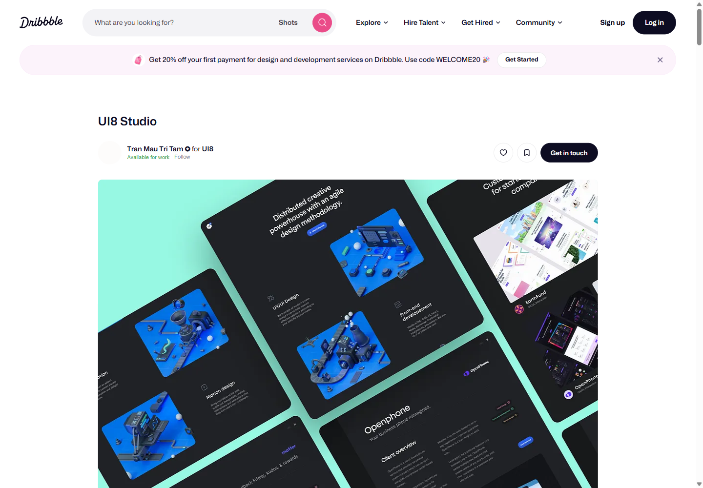
Services + detail
Pakai prinsip keluarga visual; jangan menyalin artwork atau susunan persis.
Buka sumber asli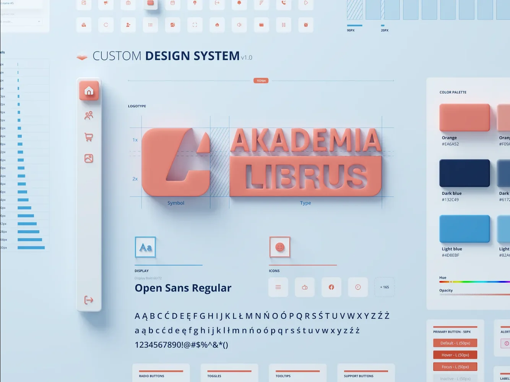
UI/UX & identity
Pakai relevansi objek; pertahankan font Renoir dan label HTML.
Buka sumber asli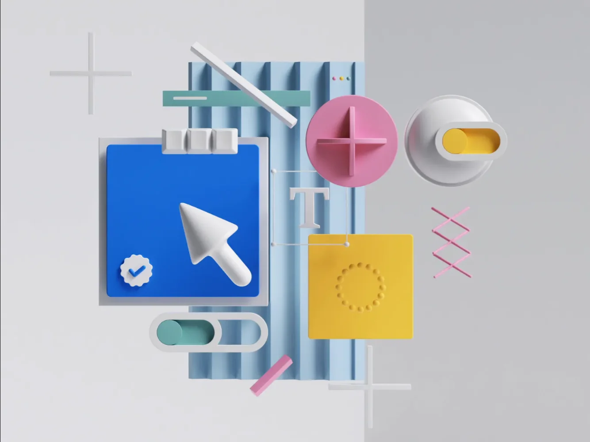
Art direction empat layanan
Referensi studi lokal saja. Jangan gunakan artwork di situs produksi.
Buka sumber asli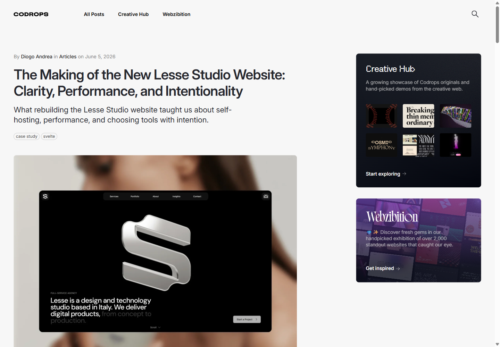
About, Services, Contact
Gunakan pelajaran struktur; jangan mengklaim motion situs sudah diuji.
Buka sumber asli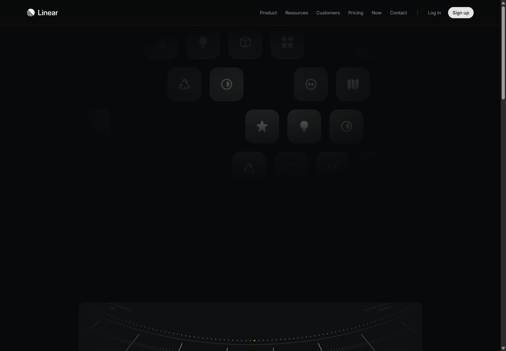
Detail layanan + Work detail
Ambil prinsip kejelasan; jangan menyalin palet atau tampilan produk.
Buka sumber asli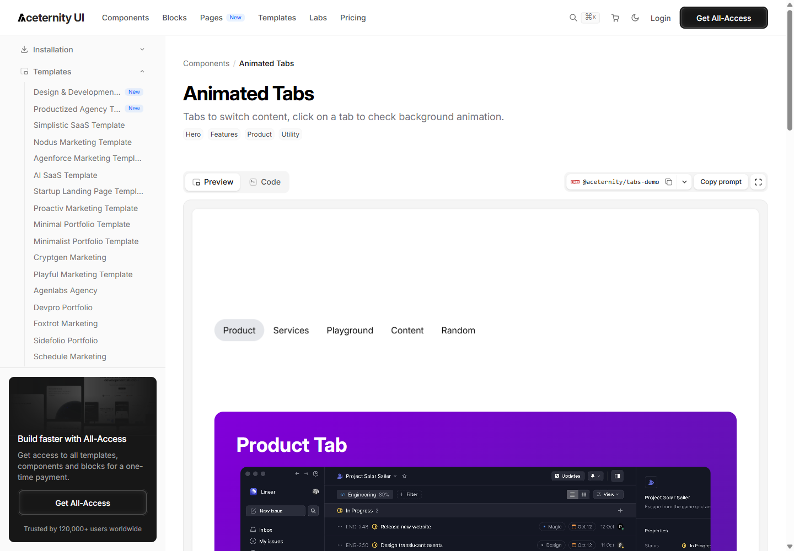
Katalog Services
Pakai pergantian panel; hindari stack dekoratif dan import React.
Buka sumber asli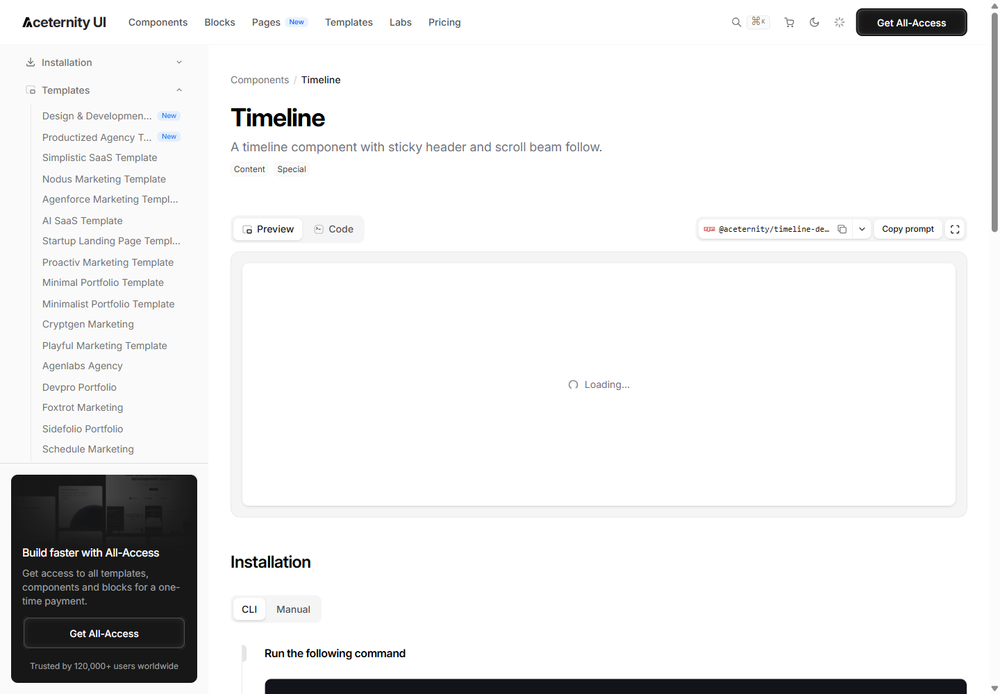
Process + Internal Systems
Ambil hubungan tahap dan hasil; jangan gunakan pinning atau scroll-jacking.
Buka sumber asli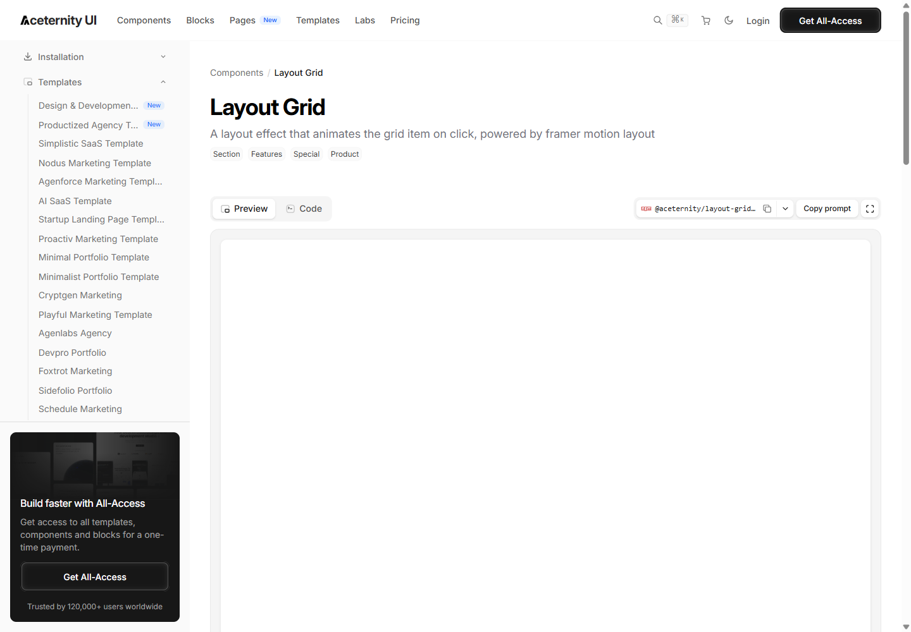
Notes + Work proof
Pakai hierarki media; pertahankan screenshot utuh dan akses ukuran penuh.
Buka sumber asli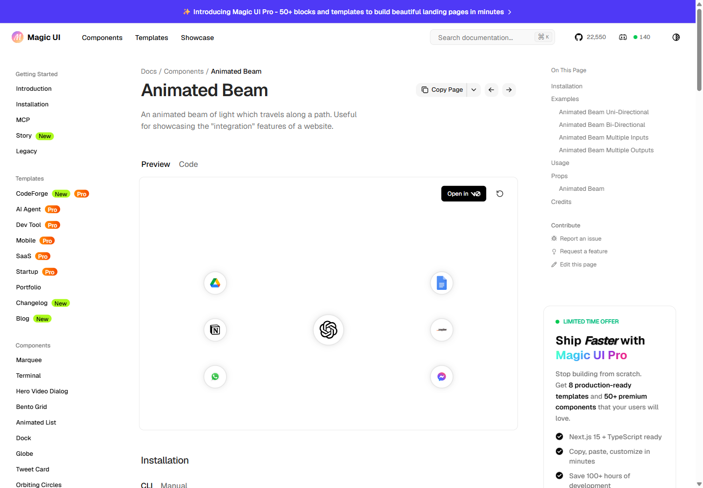
Deployment & care
Pakai keterhubungan; hindari glow berlebihan dan klaim uptime rekaan.
Buka sumber asli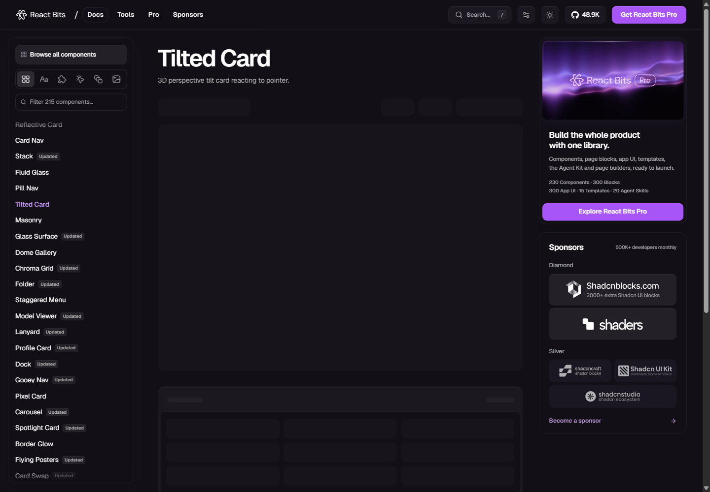
Work card
Prioritas rendah; kualitas penyajian bukti lebih penting dari tilt.
Buka sumber asli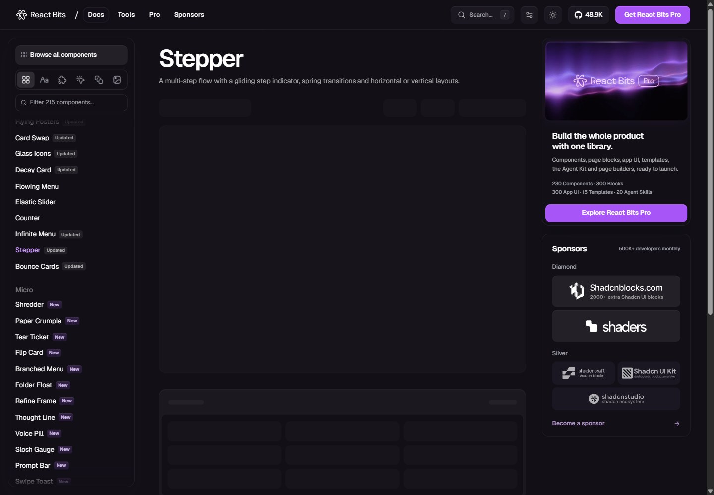
Process + penjelas scope
Pakai kontrol tahap untuk ilustrasi; pertahankan formulir saat ini.
Buka sumber asli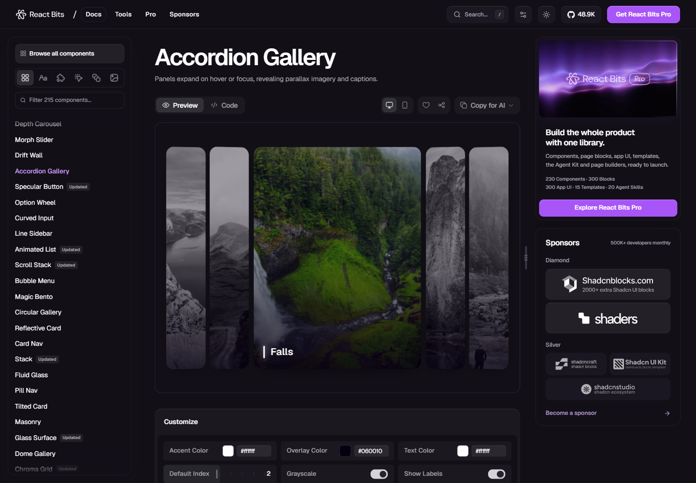
Services media selector
Jadikan pembanding; preview tunggal lebih jelas untuk empat layanan Renoir.
Buka sumber asliChoreography / 8 detik sekali
Di bawah adalah storyboard teks, bukan gambar final. Setiap tahap berlangsung 2 detik. Pengunjung bisa memilih tahap atau mengulang; seluruh informasi tetap terbaca tanpa animasi.
Catat pesanan
Tanggung jawab jelas
Terima pesanan
Riwayat terhubung
Susun hierarki
Jelaskan layanan
Tunjukkan jalur
Berikan next step
Elemen konsisten
Susun interface
Bentuk halaman
Adaptasi layout
Aplikasi siap
Hubungkan akses
Amati layanan
Hubungkan backup
Apakah adegan pesanan membuat layanan Internal Systems lebih mudah dipahami? Apakah terasa seperti software bisnis, atau terlalu seperti lini pabrik?
Percontohan memperlihatkan satu render datar dengan marker alur dan crop fokus. Animasi mekanis per objek membutuhkan layer artwork terpisah sebelum produksi.
Review adegan dan geraknya